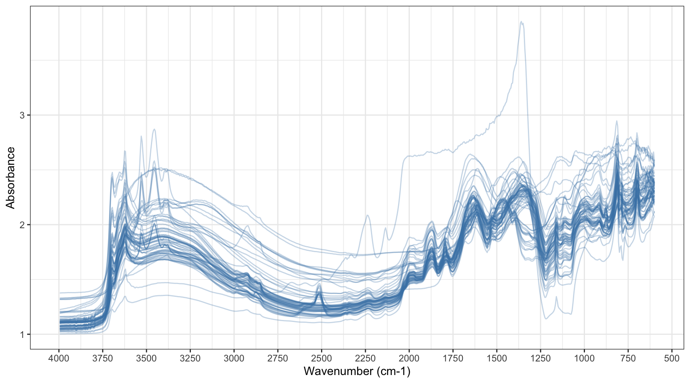
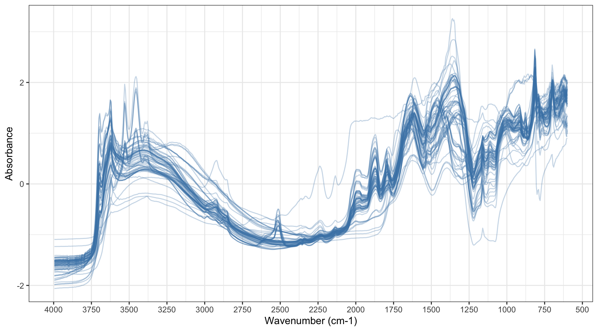
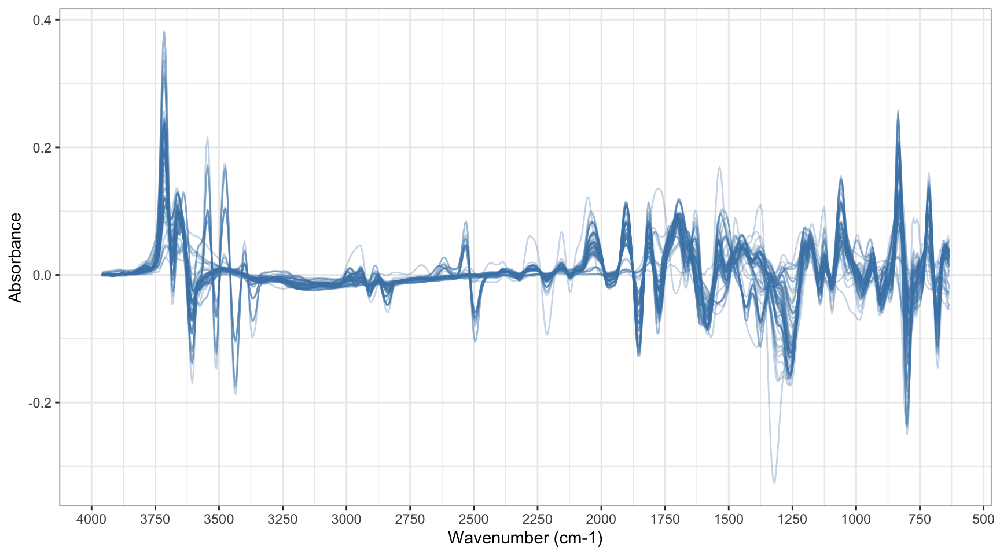

library(here)
library(tidyverse)
library(tidymodels)
library(skimr)
source(here("R", "prepare_data.R"))
source(here("R", "steps.R"))
source(here("R", "plots.R"))
theme_set(theme_bw())
tidymodels_prefer()Features engineering
Build a recipes pipeline out of resampling, SNV, and Savitzky-Golay steps.
SPECTRA_DIR = here("data/RT_spectra")
SOIL_PROP_FILE = here("data/RT_wetchem_soildata.csv")TARGET <- "potassium_cmolkg"
# --- Preprocessing ----------------------------------------------------------
RESAMPLE_BY <- 5L
RESAMPLING_GRID <- seq(3995, 600, by = -5)
SG_W <- 15L
SG_P <- 3L
SG_M <- 1LGetting data
data <- prepare_rt(SPECTRA_DIR, SOIL_PROP_FILE)Recipes
1-full-pipeline.qmd already built and used a recipe once, without explaining it. This page is that explanation. A recipe in tidymodels is a specification of preprocessing steps, written once and reused everywhere a model needs data in the same shape. The recipes package and the tidymodels recipes guide cover the general vocabulary this page assumes, alongside the Posit cheatsheets already pointed to from the course homepage.
Base recipes ships steps for the usual tabular preprocessing, centring, scaling, dummy variables, but nothing for a spectrum. step_snv(), step_sg(), and step_resample(), defined in R/steps.R, close that gap.
Each one wraps a prospectr or resemble function, prospectr::standardNormalVariate(), prospectr::savitzkyGolay(), prospectr::resample(), inside the contract a recipes step needs: a constructor, prep(), bake(), print(), tidy(). That’s what lets step_snv() sit in a recipe next to step_log() or any other tidymodels step. It gets ordered, tuned, and applied the same way every other step does.
Defining roles
Every column in data gets a role before any preprocessing happens: potassium_cmolkg as the outcome, the wn_* columns as predictors, everything else, sample_id, source, the other soil properties, as metadata. Metadata columns ride along through the whole recipe unchanged. They’re not used to fit anything, but having them still attached to data_processed later makes it possible to check whether prediction errors line up with, say, clay content or sample source, without a separate join back to the original data.
spc_cols <- names(data)[startsWith(names(data), "wn_")]
meta_cols <- setdiff(names(data), c(TARGET, spc_cols))
rec <- recipe(data) |>
update_role(all_of(TARGET), new_role = "outcome") |>
update_role(all_of(spc_cols), new_role = "predictor") |>
update_role(all_of(meta_cols), new_role = "metadata")summary(rec)# A tibble: 1,715 × 4
variable type role source
<chr> <list> <chr> <chr>
1 smp_id <chr [3]> metadata original
2 wn_3997.5 <chr [2]> predictor original
3 wn_3995.5 <chr [2]> predictor original
4 wn_3993.4 <chr [2]> predictor original
5 wn_3991.4 <chr [2]> predictor original
6 wn_3989.3 <chr [2]> predictor original
7 wn_3987.3 <chr [2]> predictor original
8 wn_3985.2 <chr [2]> predictor original
9 wn_3983.2 <chr [2]> predictor original
10 wn_3981.1 <chr [2]> predictor original
# ℹ 1,705 more rowsAll steps together
This shows the full preprocessing chain at once: log-scaling the outcome, resampling the spectral grid, SNV, then Savitzky-Golay. The rest of this page unpacks these steps one by one, adding one more each time.
rec_all <- recipe(data) |>
update_role(all_of(TARGET), new_role = "outcome") |>
update_role(all_of(spc_cols), new_role = "predictor") |>
update_role(all_of(meta_cols), new_role = "metadata") |>
step_log(all_outcomes(), base = 10) |>
step_resample(grid = RESAMPLING_GRID) |>
step_snv() |>
step_sg(w = SG_W, p = SG_P, m = SG_M)rec_prep <- prep(rec_all, training = data, verbose = TRUE)oper 1 step log [training]
oper 2 step resample [training]
oper 3 step snv [training]
oper 4 step sg [training]
The retained training set is ~ 0.44 Mb in memory.data_processed <- bake(
rec_prep,
new_data = NULL
)data_processed |> plot_spectra()
Unpacking the recipe
The rest of this page adds one step at a time to rec. Each one’s effect on the spectra is visible on its own this way. Every version gets prep()ped then bake()d before plotting.
prep() is where a step learns anything it needs from the training data, a column’s mean and standard deviation for centring and scaling, say. bake() is where that learned information gets applied: to the training data here, to a validation or test set later, using the exact same numbers either time.
None of the three steps below actually estimate anything from the training set as a whole. SNV and Savitzky-Golay both act one row at a time, using only that row’s own values. Resampling only depends on the wavenumber grid, not on any sample’s measurements. prep() still runs before each one, mostly resolving which columns it applies to. The training/test separation it exists for matters most once a step needs to remember something computed across rows, a column mean for centring, say, rather than something computed within each row.
Resampling
This step does two things. step_log(all_outcomes(), base = 10) log-scales the outcome, the fix for potassium_cmolkg’s skew discussed back in 2-loading-data.qmd and 3-eda.qmd. step_resample() interpolates every spectrum onto RESAMPLING_GRID, an evenly spaced set of wavenumbers 5 cm⁻¹ apart, versus the roughly 2 cm⁻¹ spacing read_opus_tbl() returns. That cuts the predictor count from 1707 columns to 680. It also guarantees every sample lands on the same wavenumber axis, even where the source instrument didn’t.
rec_res <- rec |>
step_log(all_outcomes(), base = 10) |>
step_resample(grid = RESAMPLING_GRID)rec_prep <- prep(rec_res, training = data, verbose = TRUE)oper 1 step log [training]
oper 2 step resample [training]
The retained training set is ~ 0.45 Mb in memory.data_processed <- bake(
rec_prep,
new_data = NULL
)data_processed |> plot_spectra()
SNV
step_snv() centres and scales each spectrum by its own mean and standard deviation, row by row, not column by column. That corrects for scatter effects, differences in particle size or packing that shift a whole spectrum up or down without changing its shape. Two spectra with the same underlying chemistry but different scatter come out looking the same after SNV. Two spectra with genuinely different chemistry stay different.
rec_snv <- rec |>
step_log(all_outcomes(), base = 10) |>
step_resample(grid = RESAMPLING_GRID) |>
step_snv()rec_prep <- prep(rec_snv, training = data, verbose = TRUE)oper 1 step log [training]
oper 2 step resample [training]
oper 3 step snv [training]
The retained training set is ~ 0.45 Mb in memory.data_processed <- bake(
rec_prep,
new_data = NULL
)data_processed |> plot_spectra()
Savitzky-Golay
step_sg() fits a polynomial of order SG_P inside a moving window SG_W wavenumbers wide, centred on each point. It then reads off either a smoothed value or a derivative from that fit, depending on SG_M. With SG_M = 1 here, each spectrum gets its first derivative instead of a smoothed value. A first derivative removes baseline shifts entirely, rather than just correcting for them the way SNV does. It also tends to sharpen overlapping peaks.
Smoothing and differentiating both cost some data at the edges. prospectr::savitzkyGolay() trims (w - 1) / 2 wavenumbers off each end. That’s why the plotted spectrum below is narrower than the one above it.
SG_W = 15, SG_P = 3, and SG_M = 1 are sensible defaults here, tuned by eye on a dataset rather than picked arbitrarily. Does the Savitzky-Golay setting matter? compares them with other settings, as part of a model fit.
rec_sg <- rec |>
step_log(all_outcomes(), base = 10) |>
step_resample(grid = RESAMPLING_GRID) |>
step_snv() |>
step_sg(w = SG_W, p = SG_P, m = SG_M)rec_prep <- prep(rec_sg, training = data, verbose = TRUE)oper 1 step log [training]
oper 2 step resample [training]
oper 3 step snv [training]
oper 4 step sg [training]
The retained training set is ~ 0.44 Mb in memory.data_processed <- bake(
rec_prep,
new_data = NULL
)data_processed |> plot_spectra()